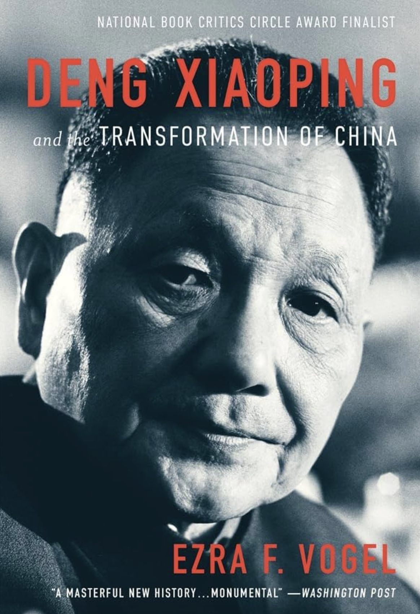
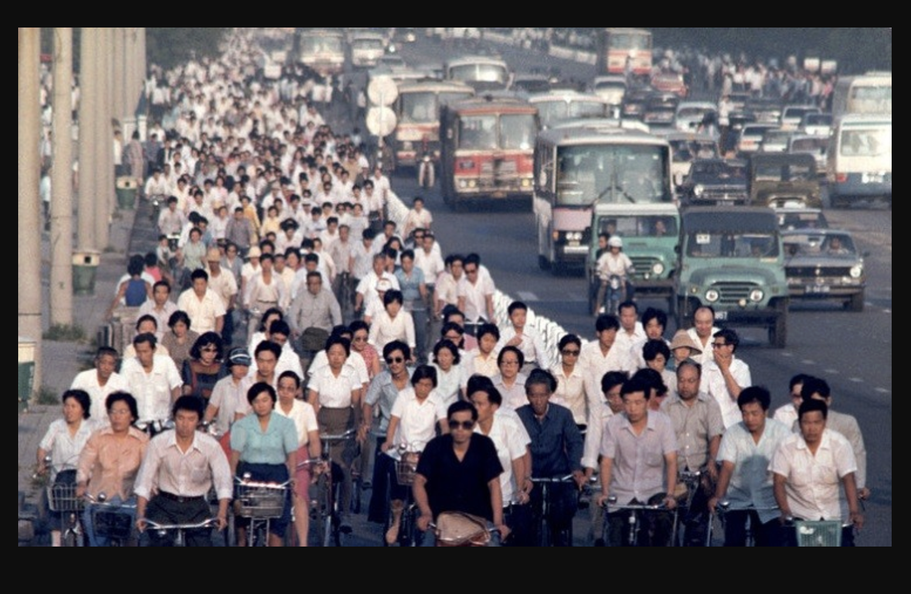
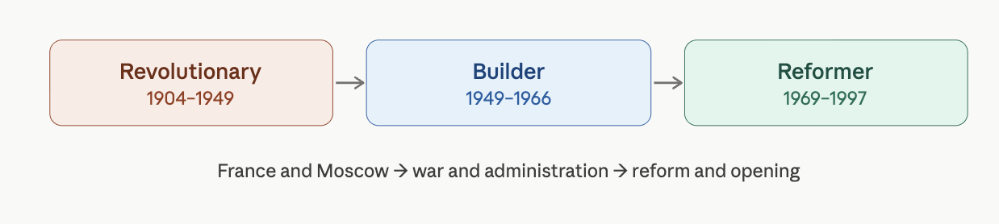
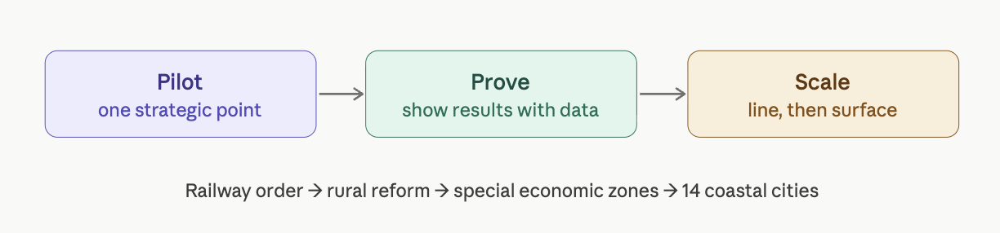
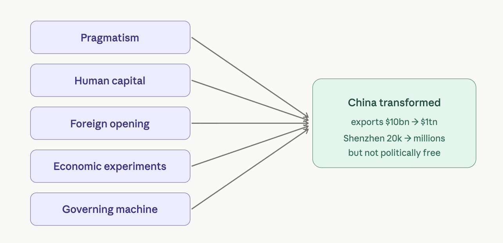
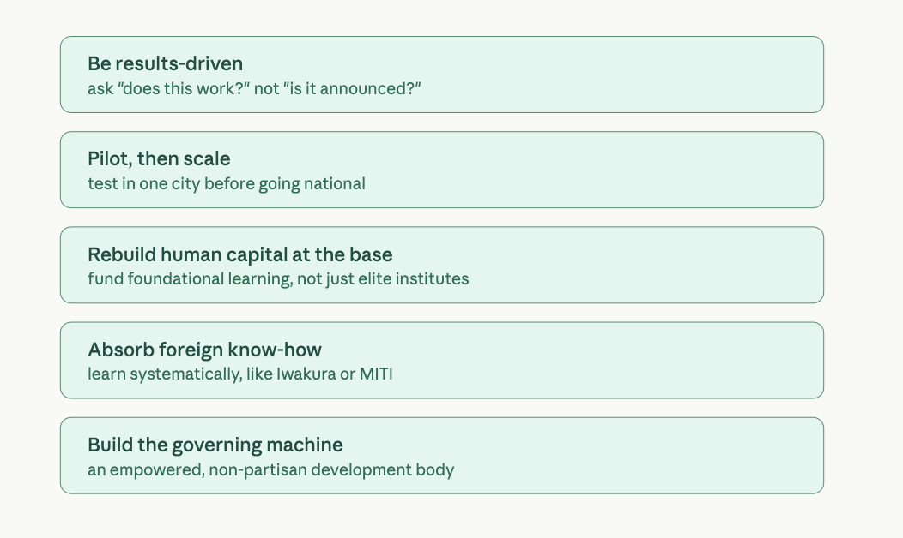
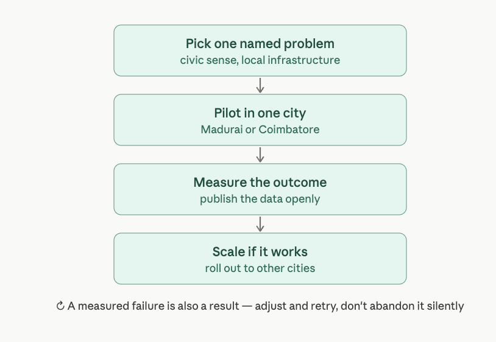
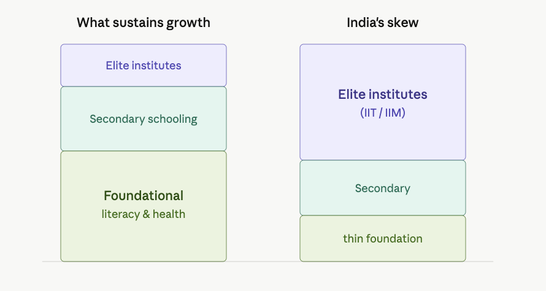

How Deng Xiaoping transformed China?
Lessons from Ezra Vogel’s book on Deng Xiaoping, and what India, Tamil Nadu can learn?
Introduction
In an earlier post, I went through the broader history of modern China, including the fall of the Qing dynasty, the Republican period, Mao’s revolution, and the rise of reform-era China.
Earlier post: Modern History of China
Direct link: https://rickrejeleene.me/Tamil/posts/2026-04-25-HistoryChina/index.pdf
One of the most important eras in the making of modern China was the era of Deng Xiaoping.
Deng changed the direction and future of the Chinese state. He moved China away from ideological rigidity and toward pragmatism, experimentation, industrial growth, foreign investment, export orientation, and long-term national modernization. At present, we are noticing the fruits of Deng’s reforms in the form of China’s rapid economic growth, rising global influence, and increasing technological capabilities.
This Essay answers three questions:
- How did Deng Xiaoping transform China?
- What were the main mechanisms behind China’s reform era transformation?
- What can India and Tamil Nadu learn from Deng’s era without mechanically copying China’s authoritarian model?
As an Indian and Tamil, I am especially interested in Deng’s era because India and China are often compared as two large Asian civilizations and developing countries. Both had huge populations, poverty, deep histories, weak infrastructure, and ambitions for national modernization. Yet their development paths diverged sharply after the late twentieth century. China became the world’s manufacturing workshop and later a technological power. India became a strong service economy, but did not create the same large-scale manufacturing transformation, and I wonder why?
This essay also builds on my earlier reflections on East Asian industrialization, Japan’s industrial policy, Tamil Nadu’s economy, and India’s development challenges.
Outline of the Book
Ezra Vogel’s Deng Xiaoping and the Transformation of China is a political, economic, and institutional history of how China moved from Maoist revolution toward reform-era modernization.
Book Map
- Front Matter
- Part I: Deng’s Background
- Part II: Deng’s Tortuous Road to the Top, 1969–1977
- Part III: Creating the Deng Era, 1978–1980
- Part IV: The Deng Era, 1978–1989
- 13. Deng’s Art of Governing
- 14. Experiments in Guangdong and Fujian, 1979–1984
- 15. Economic Readjustment and Rural Reform, 1978–1982
- 16. Accelerating Economic Growth and Opening, 1982–1989
- 17. One Country, Two Systems: Taiwan, Hong Kong, and Tibet
- 18. The Military: Preparing for Modernization
- 19. The Ebb and Flow of Politics
- Part V: Challenges to the Deng Era, 1989–1992
- Part VI: Deng’s Place in History
- Reference Sections

Front Matter
Map: China in the 1980s

Preface: In Search of Deng
The first introduction is the author sharing his motivation for writing and resources, references he went through for writing the book, and the challenges of writing about Deng Xiaoping. There’s lot of sources, he found for writing the book, including chinese sources from Chinese Internet.
Introduction: The Man and His Mission
In 1979, China was at a disastrous condition, as during the Great Leap Forward in 1960s, about thirty million people had died. The country had mobilized young people to attack high level officials. The average per capita was only $40 per year and also amount of grain produced per person was below the levels in 1957. Transportation and Communication infrastructure was in disarray, factories were operating with technology imported from Soviet Union and the equipment was in state of disrepair.
The other shock was, Universities were closed for a decade, educated youth were sent to countryside for work. But it was hard to make them stay. Many Chinese started to say the root of their problems was Mao himself, but Deng suggested it was all of them together, including himself were responsible for the problems.
Deng in 1978, did not have a clear blueprint for bringing wealth to his countrymen. However, he did open his country to the world for science and technology. He was open to to new ideas from anywhere in the world, regardless of the country’s political system. He realized what some free-market economists did not, that one could not solve problems simply by opening markets; one had to build institutions gradually. He would encourage other officials to expand their horizons, to go everywhere to learn what brings success, to bring back promising technology and management practices, and to experiment to see what would work at home. He would help pave the way by developing good relations with other countries so they would be receptive to working with China.
Deng Xiaoping saw himself as the person who would guide the system, not the person who brings the ideas. Deng had spent five years of his life in France and one year in Soviet Union, He had understood developments around the world. He remained a communist and loyal to communist party until the end of his life. Throughout his life, he was more of an implementor rather than a theorist. He was good with big issues, left the details to his subordinates to figure out. He was not a micromanager. He did not get involved with personal lives of his colleagues, subordinates. He did what was good for the country, not what was good for his friends. He was not popular with all, some considered him as autocratic.
For two centuries before 1978, Chinese leaders had been trying to find a way to make China prosperous and strong. The imperial system had worked for over two centuries. However, from the end of 1800, growth of new imperial western powers, rapid increase of population, expanded commercial developments had put a strain on imperial system. It was a challenge to convince the leaders that their imperial system was not working, and from 1861-1875, the emperor was trying to overcome the growing strain, by reinvigorating the existing system, by strengthening the examination system, teaching of Confucianism, lavishly spending on imperial palace. Tongzhi Emperor, who was ninth emperor of Qing dynasty. His faith in traditional system was shaken, when Japan defeated China in 1895. By the time Deng Xiaoping was born, the last emperor was significantly weakened, and 1911 Revolution had happened, when lead to the collapse of Qing dynasty. Yuan Shikai, a military leader tried to unify the country by declaring himself as emperor, but he was not successful, as he failed to win civilian support. Sun Yat-sen formed Guomindang party, and attracted many young nationalistic leaders, but he died in 1925, with his dreams unfulfilled. And by 1949, Mao Zedong, a charismatic visionary, brilliant strategist, and shrewd but devious political manipulator, led the Communists to victory in the civil war and in 1949 unified the country under his rule. By the time Deng came to power, Mao had already unified the country, built a strong ruling structure, and introduced modern industry advantages that Deng could build on.
Many realized that Mao’s mass mobilization was not working and China was behind in Science and Technology, and it needed to learn from the West. Around 1978, Soviet Union’s aggressive behavior, following withdrawal of United States in Vietnam, Western countries were receptive to help China loosen ties with Soviet Union. Deng never went to college, he considered his life to be a University.
Part I: Deng’s Background
1. From Revolutionary to Builder to Reformer, 1904–1969
Deng Xiaoping was born in 1904 in Paifang, Guang’an county, Sichuan. He came from a small landlord family, not from poorest peasant family. His father wanted him to be a part of the imperial-era families, hoping he will pass an exam, join as an official. So he came from a background where education, state service, family honor was valued. Deng’s growing up coincided with the rise of Chinese nationalism. After 1919, World War I, many young people were angry that foreign powers treated China as a weak country, and from this moment, Vogel says, Deng’s personal identity became tied to the national effort to end China’s humiliation and make the country “rich and strong.
His motivation was not from abstract marxist theory, but came from his desire that China must stop being weak. China must become strong. China must never again be humiliated. So, when Deng opened China to Japan, America, Europe, Hong Kong, Singapore, and global capitalism, this does not mean he has become Westernized. It was a mean to use the foreign knowledge to strengthen China. At age 16, he was sent to France as part of a work study program. He was the youngest of eighty-four Sichuan students in that program. During this trip, he was exposed to colonialism, imperialism of works from Shanghai, Hong Kong, Vietnam, Singapore, and Ceylon/Sri Lanka and the humiliation of Chinese and Asian laborers. His dream of studying science and technology collapsed in France. The work-study program could not afford the cost of french education, so Deng worked in factories and saw humiliation of Chinese workers.
After France, Deng went to Moscow and studied at Sun Yat-sen University. Vogel describes how Deng was placed in a high-level theory group for promising future political leaders. There he studied Marx, Engels, Lenin, Soviet party history, economic geography, and the Chinese revolutionary movement. Deng received both European industrial exposure and Soviet party-organizational training. And by his twenties, he had seen, modern industry and capitalist exploitation from France. Leninist organization through Soviet Union, and how China was weak, fragmented and humiliated. Communists and Guomindang split in 1927, Deng returned to China and worked in Shanghai’s underground party network. During this time, Vogel emphasizes that Deng learned not to leave a paper trail and relied heavily on memory. He also learnt that revolution was not made by enthusiasm alone, you need local support, military capacity, supplies, political legitimacy, organizational depth.
From 1931, Deng went to the Jiangxi Soviet, where Mao and other Communists had created a rural base. He became party secretary of Ruijin county. After investigating accusations that many local Communists were spies, he concluded they had been wrongly accused and freed them. He became popular among the Communists. He valued investigation, practical judgment and local support. In Jiangxi, Deng understood Mao’s achievement because Deng himself had failed to build a secure Communist base in Guangxi.

Later, when, Chiang Kai-shek, the military leader encircled the Jiangxi Soviet, the Communists fled on the Long March. Deng was one who survived the long march. And when China entered World War II, against Japan and Japanese occupation. Deng served as political commissar with Liu Bocheng in the 129th Division of the Eighth Route Army. Liu-Deng partnership became one of the most important relationships in Deng’s life. Liu Mingzhao was a Chinese military officer and Marshal of the People’s Republic of China. During 1937-1945, Deng worked on gaining practical skills from Liu such as feeding troops, recruiting soldiers, maintaining morale taxation, local production, relations with peasants, guerrilla warfare, local industry, military-political coordination. After World War II ended, Deng was in fact the highest-ranked Communist official in Jin-Ji-Lu-Yu, a border region of several million people that spanned four provinces.
Shortly after World War II, civil war broke out between the Guomindang and the Communists, the unified 500,000 Communist troops under Deng’s command as general secretary ultimately prevailed against 600,000 Guomindang forces. The victory was so complete that the Guomindang could no longer assemble large resistance forces, enabling the Communists to cross the Yangtze River and sweep southward. The local citizenry, alienated from the Guomindang because of its well-known corruption and the rampant inflation, generally welcomed the Communists, but it would take several years to overcome the damage and chaos generated by the civil war.
After the victory, It took the Communists more than two years, from 1947 when they captured the northeast, until 1949, to gain control of the entire country. After successfully pacifying the Southwest region through land reform and infrastructure projects like the Chongqing-Chengdu railway, Deng was transferred to Beijing in 1952 as vice premier, This promotion reflected Mao’s deep trust in him, Mao even mandated that government documents be cleared by Deng before reaching the party center. By 1956, Deng became secretary general of the party and joined the Standing Committee of the Politburo, placing him at the absolute center of Chinese politics. While playing the central role in leading the daily work of the party, Deng could see firsthand how Mao weighed the issues facing China and how he made decisions affecting the country.
At the 8th Party Congress in 1956, Deng was elevated from secretary general, which is essentially an office manager to general secretary, making him one of the top six leaders responsible for daily party operations. Despite being disturbed that intellectuals criticized hard working officials, Deng strongly supported Mao in defending the authority of the party and in attacking the outspoken intellectuals. When Mao launched the catastrophic Great Leap Forward. Deng himself, despite being more practical and realistic than Mao restrained himself from criticism. The human cost was staggering: 16-45 million deaths from starvation between 1959-1961. By the early 1960s, Deng’s pragmatic adjustments to retreat from Great Leap excesses created tension. Mao later complained that when he was talking, Deng would sit in the back of the room and not listen, grumbling that officials treated him like a departed ancestor, offering respect but not listening.
When Mao launched the Cultural Revolution in 1966, he targeted Deng as the number two person in authority pursuing the capitalist road, Deng’s children suffered terribly. Red Guards assaulted them, demanding information about their father’s crimes. The younger children were separated from their parents with no contact, forced to live in crowded workers’ housing where Red Guards would, barge unannounced into their home, forcing them to stand with heads bowed, while interrogators shouted at them, pasted slogans on their walls, and occasionally smashed things.
And by 1969, when sent to Jiangxi, Deng was already convinced that China’s problems resulted not only from Mao’s errors but also from deep flaws in the system that had produced Mao. He had transformed from revolutionary pre-1949, to builder 1949-1960s, to would-be reformer, using his extraordinary depth of experience at the highest levels in the military, the government, and the party to think about systemic reforms.
Part II: Deng’s Tortuous Road to the Top, 1969–1977
2. Banishment and Return, 1969–1974
On October 26, 1969, Deng Xiaoping, along with his wife, Zhuo Lin, and his stepmother, Xia Bogen, left Zhongnanhai, where they had lived for more than a decade. His daily routine was spartan: manual labor at a tractor-repair station, echoing his factory work in France decades earlier, compulsory study of Mao’s works, tending a vegetable garden, and rationing cigarettes and wine. Yet according to his daughter Deng Rong, he never let his emotions run away with him. He did not become depressed.
Deng used exile to achieve clarity about major, long-term national goals. Each afternoon he walked some forty times around the house, circling with quick steps…deep in thought…day after day, year after year. His daughter observed he was “thinking especially about his future and China’s future, and about what he would do after he returned to Beijing. Mao punished Deng but preserved him. Mao often destroyed political enemies fully, but Deng was different. Mao still saw him as someone who might be useful later.
One of the most painful parts of this period was what happened to Deng’s son, Deng Pufang. During the Cultural Revolution, Pufang was persecuted and became paralyzed after falling or being forced from a building. Because Deng was politically condemned, Pufang’s medical treatment was delayed. Later, when he joined the family in Jiangxi, the family cared for him intensely. The Cultural Revolution wounded his own family.
Deng did not decide to completely denounce Mao, He preserve Mao’s historical status, but reinterpret Maoism in a practical way. This was because, Deng understood that if Mao were fully destroyed, the Communist Party’s legitimacy might also collapse. During exile, Deng followed international events carefully. China was slowly opening to the world: relations with Canada, the United Nations seat, Kissinger’s secret visit, Nixon’s visit, and Japanese normalization. These events mattered because Deng began seeing that China could not remain closed forever. He also listened to reports from his children and others about China’s poverty. He learned how poor workers and peasants still were after decades of socialism.
So Deng absorbed that China needed order, technology, education, foreign learning, and economic modernization, not endless class struggle. After Lin Biao’s fall in 1971, Mao became more dependent on experienced old officials. Zhou Enlai also needed capable people to restore order. Deng wrote carefully worded letters showing loyalty and humility. Mao slowly allowed him to return. By 1973, Deng was back in Beijing. At first, he was not supreme. He was being tested. Mao and Zhou both saw Deng’s usefulness. Zhou was ill, Mao was aging, and China needed someone capable of administration, foreign affairs, military affairs, and economic order.
3. Bringing Order under Mao, 1974–1975
China in the mid-1970s was still damaged by the Cultural Revolution. Factional fighting, weak factories, poor transport, politicized universities, a bloated military, and revolutionary committees had damaged everyday governance. So Deng was tasked with restoring order to this.
Deng was given major responsibilities in government, military, and foreign affairs. He became first vice premier and took charge of much of the State Council’s work. Mao also gave him military responsibilities. Deng was now the practical administrator under Mao’s shadow. Zhou’s final major public report in January 1975 again emphasized the Four Modernizations: agriculture, industry, national defense, and science and technology. Deng helped carry this agenda forward.
Deng needed Mao’s approval to restore order. So he used Mao’s own language. He emphasized three Mao-approved themes:
- Oppose revisionism
- Promote stability and unity
- Improve the national economy
The genius was in the combination. The radicals wanted to emphasize only class struggle and anti-revisionism. Deng linked Mao’s words to stability, unity, and economic work. This gave him political cover to discipline factions, restore production, and bring back experienced officials.
In Political Skills, this was one of his greatest strengths: using the language of the old system to move toward a new direction. So, when Deng looked at the People’s Liberation Army and saw serious problems. It had become too large, too politically involved, too undisciplined, and technologically backward. He criticized the military as bloated, scattered, arrogant, extravagant, and lazy. His goal was to reduce the size of the army, restore discipline, revive training, bring back competent officers, and prepare for modernization.
Xuzhou railway center functioned as a major railway hub in China, serving as the critical intersection of the Beijing-Shanghai and Lanzhou-Lianyungang railway. China’s railways were essential for moving coal, grain, industrial goods, and military supplies. But factional fighting had damaged railway operations. Deng chose the railway system because it was a concrete bottleneck. If rail transport improved, the whole economy could improve. Wan Li was one of Deng’s key lieutenants and allies during China’s economic reforms. Wan Li was a Chinese Communist revolutionary and Politician. He was sent to fix the Xuzhou railway center. He executed changes by removing serious factional troublemakers. He rebuild leadership teams, allowed lower-level people to admit errors and return to work. Reversed unjust verdicts against people persecuted earlier, compensate some victims and families. He Improved workers’ living conditions and restored measurable output. The results were dramatic. In Xuzhou, the number of railway cars handled daily rose from 3,800 to 7,700, and loaded cars doubled from 700 to 1,400.
Deng’s method, start with one point extend to a line then expand to the broader surfaces. This is one of the most important methods of reform. Deng did not try to fix everything at once. He picked a strategic bottleneck, solved it, demonstrated success, then expanded the method elsewhere.
So it was pilot → prove → scale.
For Deng, In 1975, the pilot was railway order. Later, it would become Guangdong, Fujian, Shenzhen, rural reform, and export zones. Deng also dealt with factional disorder in Zhejiang. Wang Hongwen, Mao’s young radical successor candidate, failed to restore order there. Deng’s tougher, more disciplined approach worked better. This weakened Wang Hongwen and strengthened Deng’s position. Mao increasingly saw Deng as necessary. Mao told Kim Il Sung that Deng could wage war, oppose revisionism, and was needed. Mao’s confidence in Deng rose because Deng was producing results. In 1975, Deng visited France, visit exposed Deng again to Western industry, technology, agriculture, and management. He saw how far China lagged. This strengthened his later belief that China must learn from advanced countries.

4. Looking Forward under Mao, 1975
By mid-1975, Deng was not only handling government and military affairs. He was also leading much of the party’s daily work. This gave him enormous practical influence.His priority was to rebuild party organization after years of Cultural Revolution chaos, he wanted experienced officials restored, factional politics reduced, army officers removed from civilian posts, party members admitted during chaotic years reviewed, ministries and provinces run by competent leadership teams. Deng realized, China could not modernize if its institutions were run by factional radicals and inexperienced political climbers.
Political Research Office
On January 6, 1975, the day after Deng took office as vice premier, he had called in Hu Qiaomu and suggested to him that he, Wu Lengxi, Hu Sheng, Li Xin, and others form a small group of writers to deal with theoretical issues, Acutely aware of Mao’s sensitivities on theoretical issues, Deng and Hu chose people highly regarded by Mao and selected topics to work on that were dear to Mao’s heart: the three worlds, the character of the Soviet Union, the crisis of capitalism, and critiques of revisionism and imperialism.
From the beginning, Deng spent a great deal of time and energy to find ideological arguments acceptable to Mao, to permit himself to have maximum freedom to pursue policies that he felt beneficial to the party and country. As the small brain trust that had been assembled in January expanded its membership in the Political Research Office beginning in July, Deng could work on issues he personally regarded as important (and that Mao would not object to), especially science and technology, and industrial development.
This office helped Deng formulate documents on industry, science, education, and general policy. It allowed Deng to create a practical reform agenda while still using Maoist and Marxist language. This is very important: Deng understood that reform needed ideas, documents, language, and institutional design. It was not enough to personally believe in modernization. He needed a team to convert ideas into policy.
Deng’s team worked on industrial reform. The basic problem was that Chinese industry had become inefficient, politicized, and technologically backward. The reform ideas included, better management, stronger discipline, higher product quality, use of foreign technology, material incentives, clearer rules, more attention to efficiency and output. This was not yet full market reform. But it was a major move away from Cultural Revolution politics. It said production matters. Management matters. Technology matters. Incentives matter.
Key Members
The office had only 41 staff members at its peak, but they were senior party intellectuals –creative strategists and good writers.
Key members included:
- Hu Qiaomu (Deng’s closest intellectual adviser)
- Deng Liqun (strong theoretical background)
- Yu Guangyuan (economist and reformer)
- Wu Lengxi, Li Xin, Hu Sheng (experienced propaganda hands who knew how to work with Mao)
The office functioned like the U.S. White House staff—a small group of independent advisers directly responsible to Deng who could help him define an overall strategy and draft public announcements.
Deng had far greater control over this office than the unwieldy party bureaucracy. Their workflow: Deng provided political direction and key ideas, the intellectuals drafted documents faithful to Marxist theory and Mao’s writings, then Deng reviewed drafts personally before sending especially important ones to Mao for approval. Even with his special relationship with Mao, “Deng worried that the mercurial Mao might find some document unacceptable and let loose his fury. The office lasted only five months—it halted in December 1975 when Deng lost Mao’s support. In that brief time, it held just thirteen full-staff meetings but produced what would be criticized as the”three poisonous weeds”:
- Twenty Articles on Industry
- Outline Report on Chinese Academy of Sciences
- Discussion of Overall Principles
To radicals, this was dangerous. They saw it as bringing back pre-Cultural Revolution methods and capitalist thinking. Deng was especially passionate about science and technology. The Chinese Academy of Sciences had been badly damaged during the Cultural Revolution. Scientists were criticized, institutes weakened, research disrupted, and intellectual work treated with suspicion. Deng and Hu Yaobang tried to revive scientific work. Deng argued that China needed scientists, engineers, researchers, foreign knowledge, mathematics, physics, chemistry, and modern technical education. He wanted scientists treated as part of the working class, not as politically suspicious bourgeois intellectuals.
This becomes one of Deng’s central principles: Without science and technology, there can be no Four Modernizations. This is one of the most important links between 1975 and the post-1978 reform era. Deng also wanted to restore universities, Students were often admitted based on political background, class status, and recommendation rather than academic ability. Deng believed this had damaged China’s future. He wanted academic standards restored. He believed a modern country needed trained specialists. Deng believed modernization required talent selection. He wanted to identify capable people and train them intensely for national development.
There was also a limited effort to loosen cultural life. Mao himself had complained that there were too few cultural works beyond model operas. But this opening was limited. The Gang of Four still had strong influence over culture and propaganda. The education issue became politically explosive at Tsinghua University. Deng supported efforts to improve educational standards, but radicals at Tsinghua resisted. Letters criticizing radical university leadership were forwarded upward. Mao interpreted some of this as an attack on the Cultural Revolution itself. Mao’s nephew, Mao Yuanxin, became an important messenger and political influence. He reported to Mao that Deng was focusing too much on production and not enough on class struggle. This fed Mao’s suspicions.
The radicals accused Deng of reversing the verdicts of the Cultural Revolution, restoring old methods, and taking the capitalist road. Deng wanted modernization, expertise, and order, Mao wanted Deng to affirm the Cultural Revolution, Deng refused. Deng would compromise on language. He would praise Mao. He would remain loyal to the party. But he would not publicly affirm the Cultural Revolution as correct.
5. Sidelined as the Mao Era Ends, 1976
Deng is purged again, but the forces that oppose him are losing legitimacy. Zhou Enlai dies, the public mourns, the Gang of Four overreaches, Mao dies, and Hua Guofeng arrests the radicals. Deng is temporarily defeated, but history is moving in his direction.
Zhou Enlai was a Chinese statesman, diplomat, and revolutionary who served as the first Premier of the People’s Republic of China from October 1949 until his death in January 1976. Zhou served under Chairman Mao Zedong and aided the Communist Party. Zhou Enlai died in January 1976. His death deeply moved the Chinese people. Zhou was seen as moderate, humane, competent, and protective compared with the radicals. Deng gave Zhou’s eulogy. The public grief for Zhou was also indirect support for Deng, because Deng was seen as Zhou’s practical successor and ally. After Zhou’s death, the radicals intensified criticism of Deng. They attacked him for promoting the rightist reversal of verdicts, meaning he was accused of trying to reverse Cultural Revolution judgments.
Deng’s practical slogans, stability, unity, production, black-cat-white-cat pragmatism, were attacked as bourgeois and revisionist. Mao also became suspicious because Deng would not affirm the Cultural Revolution, The campaign escalated in early 1976, though Mao still limited how far the radicals could go. Mao criticized Deng, but he did not want Jiang Qing, who played major role in the Cultural Revolution and led the Gang of Four, to completely destroy him.
April 5, 1976, During the Qing Ming festival, people gathered in Tiananmen Square to mourn Zhou Enlai. The mourning became political. Poems, wreaths, speeches, and posters honored Zhou and attacked the Gang of Four, Some also expressed support for Deng. People even used small bottles as a symbolic pun on Xiaoping. The anti-Deng campaign had failed to win public support. The people were not inspired by radical Maoism anymore. They were tired of chaos, factional politics, and ideological attacks. Zhou and Deng symbolized order, competence, and relief from radicalism.
The authorities cleared the square. The event was labeled counterrevolutionary. Deng was blamed, even though he had not organized it. On April 7, 1976, Deng was stripped of his posts. Hua Guofeng was elevated as premier and first vice chairman. But Deng was not expelled from the party. This was important. Mao still did not destroy him fully. He even gave Deng some personal protection and consideration. Deng was moved away from immediate danger and later allowed certain family accommodations. Mao never completely gave up on Deng, So Deng was defeated, but not finished.
Hua Guofeng was Mao’s chosen successor, He was not a radical like Jiang Qing, He was cautious, moderate, and pragmatic in some ways. Senior officials supported him partly because he seemed like the only person who could hold the country together after Mao. Mao died in September 1976. This changed everything. The Gang of Four tried to preserve and expand their influence, especially through propaganda and radical networks.
6. Return under Hua, 1977–1978
On October 6, 1976, Hua Guofeng, Ye Jianying, Wang Dongxing, and allies arrested the Gang of Four. This ended the radical Maoist faction’s attempt to control the post-Mao future. The arrest was widely welcomed. It was framed as a victory of the party against conspirators. It also allowed China to blame the worst excesses of radical Maoism on the Gang of Four rather than directly on Mao himself.
Deng understood power realities. After the Gang of Four were arrested, he wrote in support of Hua Guofeng. He praised Hua as Mao’s appropriate successor and supported the party center. This was not because Deng was naïve. It was political discipline. He knew he needed to accept Hua’s formal authority before he could return. Deng was too experienced, too strong, and too likely to overshadow him. Hua arrested the Gang of Four, reduced radical Maoist politics, emphasized modernization over class struggle, sent delegations abroad, and supported some opening to foreign technology.
Deng did not say, Mao was wrong, abandon him. Instead, he said Mao Zedong Thought must be understood correctly and comprehensively. Deng made clear that he wanted to work on science, technology, and education. Deng believed China was far behind the advanced world. In July 1977, Deng’s positions were restored. He returned as a top leader, though formally still under Hua and Ye Jianying. Deng restored university entrance examinations in 1977. During the Cultural Revolution, admission had been politicized through class background, recommendation, and ideological criteria. Deng shifted the system back toward academic merit. Deng dismissed good class background as the criterion and relied on entrance exams. This created a national meritocratic selection system that affected education, officialdom, and China’s later development.
Deng pushed the idea that science and technology were essential to production. This was a major break from radical Maoism, which treated politics and class struggle as primary. Deng wanted, scientists respected, research institutes restored, foreign textbooks used, students sent abroad, foreign experts invited, scientific management revived, universities strengthened. Hu Yaobang and reform-minded intellectuals promoted the article arguing that practice, not dogma, is the test of truth. It challenged the maoist idea, and argued that Marxism was not frozen and that theories must change when experience shows they are wrong.
This was a shift from ideological purity, from Truth comes from Mao’s words towards Truth must be tested by reality. This is the philosophical foundation of Deng’s reform era. Hua convened the 11th Party Congress in August 1977. This was meant to establish a post-Mao political order. Hua had to leave many issues unresolved. A major issue in 1977–1978 was the rehabilitation of people wrongly purged during the Cultural Revolution. This mattered because the reform era needed old cadres, experts, administrators, scientists, and intellectuals to return. But to rehabilitate them, the party had to admit that many previous political verdicts were false.
His most important early decision was restoring national university entrance examinations in 1977. Some 5.78 million people took the exam, but only 273,000 university places were available, making admission extremely selective. This restored merit, revived respect for study, and rebuilt China’s human-capital pipeline after the Cultural Revolution. Deng also withdrew worker propaganda teams from universities and research institutes, restored scientific administration, reestablished the State Science and Technology Commission, supported CASS, and argued that science and technology were forces of production. Meanwhile, Hu Yaobang and reform-minded officials at the Central Party School challenged Hua’s “Two Whatevers” with the principle that practice is the sole criterion for testing truth. The chapter marks the transition from Maoist legitimacy based on quotation and class struggle to Dengist legitimacy based on results, expertise, science, and modernization.
Part III: Creating the Deng Era, 1978–1980
7. Three Turning Points, 1978
In this chapter, there’s an important event from Japan, which I highlight in my earlier posts.
The Iwakura Mission of 1871–1873 sent top Japanese officials to many countries to study factories, mines, schools, railways, shipyards, agriculture, finance, museums, parks, and government systems. The point was not tourism. It was elite education. Japanese leaders saw how far behind Japan was, but instead of becoming discouraged, they returned home energized and ready to modernize. China did not have one single Iwakura-style mission, but from 1977 to 1980 many Chinese officials went abroad in separate study tours. These trips played a similar role: they opened the eyes of Chinese officials and gave them a shared understanding that China was backward and had to change. Transformation began when the ruling elite saw reality with their own eye. Deng did not only give speeches saying China was backward. He sent officials abroad so they could see Japan, Hong Kong, Europe, Yugoslavia, Romania, and capitalist economies directly.
In 1978, many senior Chinese officials traveled abroad. Vogel says about thirteen vice-premier-level officials made around twenty trips abroad, visiting about fifty countries, while hundreds of ministers, governors, provincial party secretaries, and staff also participated. These officials returned excited by what they had seen and wanted more teams to study abroad. Deng summarized the effect by saying that the more officials saw abroad, the more they realized China was backward. He then told speechwriters preparing his reform-and-opening speech that China had to acknowledge its backwardness, recognize that many old methods were inappropriate, and change. Chinese individuals had gone abroad before and returned with ideas. But in the late 1970s, something different happened: officials with actual power traveled together, learned together, and returned with authority to implement what they learned.
The four major study tours of 1978, A delegation visited Yugoslavia and Romania. This mattered because Yugoslavia had previously been condemned by Maoists as “revisionist.” After the trip, China stopped using that hostile label and restored relations with the Yugoslav Communist Party. This widened the range of socialist reform models China could study, China could now learn from non-Maoist socialist experiments without being accused of ideological betrayal. Officials from the State Planning Commission and Ministry of Foreign Trade visited Hong Kong to study finance, industry, management, and trade. They explored the possibility of creating an export-processing zone in Bao’an county, Guangdong, across from Hong Kong. That area later became connected to the rise of Shenzhen.
Hong Kong became a doorway into global capitalism: capital, management, trade knowledge, export systems, and financial practices. Deng also understood that Guangdong’s problem of young people fleeing to Hong Kong would not be solved mainly by more fences. It would be solved by improving Guangdong’s economy so people did not feel forced to escape. Japan was important not only as a source of technology, but as a model of organized modernization. China wanted to learn how Japan managed industrial upgrading, technology absorption, quality, organization, and state-business coordination. Japan was both an example from the 1870s and a living example in the 1970s. Western Europe offered lessons in advanced industry, science, technology, infrastructure, and management. For Chinese officials who had been isolated for decades, these visits showed how wide the gap was between China and advanced industrial societies.
Deng’s reform era did not start only with central orders. Some of the most important changes began as local experiments. In Anhui, Wan Li supported reforms that allowed production responsibility to be decentralized to smaller units. In poor areas, some localities pushed responsibility down toward the household level because people were facing hunger and needed practical solutions. Wan Li argued that policies interfering with production were wrong and that practice should determine what worked. In Sichuan, Zhao Ziyang also allowed decentralization of rural work to smaller units. Deng encouraged Zhao to experiment boldly, drawing on what Wan Li had done in Anhui. The way reforms were implemented, First, an experiment happens locally. Then results appear. Then critics attack. Then reformers defend it using evidence. Then the policy slowly expands.
The biggest political turning point came at the Central Party Work Conference in November–December 1978. Hua Guofeng expected the conference to focus on agriculture and the 1979–1980 economic plan. But within days, the meeting shifted from economics to politics. Officials began attacking the “two whatevers,” demanding rehabilitation of people wrongly persecuted, and criticizing the failure to reverse Cultural Revolution verdicts. The meeting had 210 top party officials, including senior party, military, provincial, and government figures. They were divided into regional groups, spoke frankly, and circulated daily summaries. Deng did not attend the small-group sessions, but he read the reports carefully. The question central to the meeting was, How do we correct the disasters and move China toward modernization?

One major issue was the April 5, 1976 Tiananmen incident, when people had gathered to mourn Zhou Enlai and indirectly criticize the Gang of Four. Under Mao, the event had been condemned as counterrevolutionary, and Deng was blamed. At the 1978 work conference, pressure grew to reverse that verdict. The Beijing Party Committee declared the 1976 Tiananmen mourning a revolutionary action and rehabilitated those persecuted for participating. Major newspapers then publicized this reversal. Hua retained formal titles as head of party, government, and military, but Deng became the preeminent spokesperson for the party’s direction. Deng also reassured senior colleagues that he would not become China’s Khrushchev. He would not launch a direct attack on Mao the way Khrushchev attacked Stalin. He would preserve unity under Mao Zedong Thought while changing the actual direction of policy. Third Plenum of the 11th Central Committee, held in December 1978, formally approved the new direction that had emerged during the work conference. Economic construction became the main focus, rather than class struggle. Science, education, agriculture, and modernization would be prioritized.
8. Setting the Limits of Freedom, 1978–1979
Deng allowed intellectual and political opening after the Third Plenum but then drew firm boundaries when criticism threatened Communist Party rule. After years of Cultural Revolution repression, many Chinese wanted to speak about their suffering, defend themselves, and criticize past abuses. Deng initially tolerated Xidan Democracy Wall because it helped weaken the “two whatevers,” criticize the Gang of Four, and give reformers political space. But as posters and unofficial groups began demanding democracy, human rights, rule of law, and the right to challenge party leaders, Deng concluded that public freedom might produce disorder and undermine party authority. The arrest of Wei Jingsheng and the March 1979 restrictions effectively ended Democracy Wall.
At the same time, the party-sponsored Conference on Theoretical Principles allowed selected intellectuals to criticize Mao-era errors and explore reform, but even this internal discussion alarmed senior leaders when it appeared to move toward broader de-Maoization. Deng responded with his March 30, 1979 speech on the Four Cardinal Principles: socialism, the dictatorship of the proletariat, Communist Party leadership, and Marxism-Leninism-Mao Zedong Thought could not be challenged.
9. The Soviet-Vietnamese Threat, 1978–1979
Deng as a hard realist foreign-policy leader. After returning to responsibility for national security and foreign affairs, Deng saw China’s main strategic danger as Soviet-Vietnamese encirclement. Vietnam’s expansion into Laos and Cambodia, backed by the Soviet Union, threatened to pressure Southeast Asian countries into accommodating Soviet-Vietnamese power.
From January 1978 onward, Deng traveled more than he had in his entire previous life. He visited Burma/Myanmar, Nepal, North Korea, Japan, Malaysia, Thailand, Singapore, and the United States. During the same period, China concluded the Treaty of Peace and Friendship with Japan, negotiated normalization with the United States, and prepared for war with Vietnam.
Deng responded with a dual strategy: deepen relations with Japan, the United States, and ASEAN for modernization and security, while preparing a limited punitive war against Vietnam. During his Southeast Asian tour, Deng reassured regional leaders that China would stop exporting revolution and encouraged overseas Chinese to be loyal to their countries of residence. After the Soviet-Vietnamese treaty and Vietnam’s invasion of Cambodia, Deng decided to teach Vietnam a lesson by attacking Vietnam directly, seizing key locations, and withdrawing quickly. The 1979 war exposed serious weaknesses in the PLA, but Deng claimed it achieved its strategic goal by showing Vietnam and the Soviet Union that expansion would be costly.
10. Opening to Japan, 1978
Deng was pragmatic about opening to Japan in 1978. Deng sought Japanese support against Soviet-Vietnamese expansion. Deng visited modern factories, transport systems, and industrial facilities. Japanese television showed him as energetic, observant, confident, and curious about superior Japanese technology, but not submissive.
One famous moment came when Deng rode Japan’s high-speed train, the shinkansen, When asked what he thought, he reportedly gave a simple answer: “It is very fast.” Vogel says Chinese schoolchildren were later taught this as a perfect answer because Deng acknowledged foreign technological superiority without losing Chinese pride.
He also understood that Japan could be one of China’s most important partners in the Four Modernizations. Japan had advanced technology, effective management, industrial discipline, and experience in rapid postwar growth. The challenge was political and emotional: Japan was China’s former enemy, and many Chinese still remembered or had been taught about Japanese wartime atrocities.
Deng therefore used his October 1978 visit not only for diplomacy but also for public education. Chinese film crews showed Japanese factories, trains, and welcoming citizens to help Chinese people accept Japan as a source of learning. Deng balanced curiosity with national pride, famously acknowledging the speed of the shinkansen without appearing submissive. The Treaty of Peace and Friendship and Deng’s meetings with Japanese political and business leaders opened channels for technology transfer, management learning, industrial cooperation, and later major projects such as Baoshan steel.
From this, We can notice Deng’s core pragmatism, that historical enemies could become teachers if doing so strengthened China. Inayama Yasuhiro, Deng’s primary business host, had already helped modernize China’s Wuhan Steel plant. Some of his own employees criticized him for transferring too much technology to China, but Inayama believed technology transfer could benefit both sides and help build regional prosperity. Prime Minister Fukuda, Foreign Minister Sonoda, Keidanren head Doko Toshio, business host Inayama Yasuhiro, and Matsushita Konosuke belonged to a builder generation. They had seen devastation, hunger, defeat, and reconstruction. They understood what it meant to rebuild a country.
11. Opening to the United States, 1978–1979
Deng normalized relations with the United States not because he loved America, but because China needed American science, technology, education, diplomatic weight, and strategic support against the Soviet Union. Deng wanted China to modernize quickly. For that, Japan was crucial, but the United States was even more important in several ways. Deng knew that Japan, South Korea, and Taiwan had modernized partly through access to American science, technology, universities, capital, management, and markets. He also understood that even many European technologies depended on American patents and companies. So if China wanted advanced technology, it needed a working relationship with the United States. Deng expected that once the U.S. ended the defense treaty, Taiwan would eventually have few options and would accept reunification. Many American officials also expected at the time that Taiwan might move toward some accommodation with Beijing within a few years.
Zbigniew Brzezinski’s was President Jimmy Carter’s National Security Advisor, He visited China in 1978. Brzezinski was more anti-Soviet than Vance and more enthusiastic about using the China relationship to reshape global strategy. Deng and Brzezinski connected because both wanted a tougher line against Soviet expansion. Deng pressed Brzezinski hard on the Soviet threat, Vietnam’s growing ties with Moscow, and American hesitation. Deng even needled him by suggesting perhaps the U.S. feared offending the Soviet Union. Brzezinski responded in kind, and their exchange showed a tough but productive strategic rapport.
During the same discussions, Deng also pressed Brzezinski on U.S. technology export controls. He cited blocked cases involving a U.S. supercomputer, a Japanese high-speed computer with U.S. parts, and a scanner. This shows how concrete Deng’s modernization agenda was. He was not simply asking for friendship; he wanted specific technology barriers removed. One of the most important results of normalization was educational exchange. Deng would not send students to the United States before formal diplomatic normalization. But after normalization, the first group of about fifty Chinese students left for America in early 1979. Within the first five years, around 19,000 Chinese students went to the United States for study. Factories and machines mattered, but people mattered even more. Chinese students trained in American universities later became scientists, engineers, professors, administrators, entrepreneurs, and technology leaders.
Both sides knew Taiwan could make or break the deal. The U.S. proposal was to normalize relations with Beijing while allowing unofficial commercial, cultural, and other relations with Taiwan to continue. The negotiations were structured carefully: easier issues first, difficult issues later, especially arms sales to Taiwan. Deng himself did not negotiate every detail. Huang Hua, Han Nianlong, Zhang Wenjin, and other senior diplomats handled much of the work. On the American side, Leonard Woodcock played the central negotiating role.
The hardest issue was U.S. arms sales to Taiwan, China wanted them ended. The United States intended to continue some sales after 1979, though in a limited way. This almost derailed the agreement. On December 15, 1978, Woodcock met Deng urgently to make sure there was no misunderstanding. Woodcock explained that U.S. domestic politics required keeping open the possibility of future arms sales to Taiwan. Deng became furious but controlled. He said continued arms sales would make peaceful unification harder and might leave force as the only alternative.
Deng objected strongly. But after nearly an hour, Woodcock argued that normalization itself was the essential first step and that, over time, the American public would accept Taiwan as part of China. Deng finally said “hao”, okay. With that single word, the impasse was overcome. He was angry. He thought the U.S. position was wrong. But he judged that normalization was too important to lose over an issue he could continue contesting later.
The joint announcement was made on December 16, 1978 Beijing time, and December 15 in Washington. The two countries agreed to establish diplomatic relations from January 1, 1979. The mood in Beijing was jubilant. Taiwan was shocked and angry. For the first time since 1949, the United States and the People’s Republic of China had normal diplomatic relations.
12. Launching the Deng Administration, 1979–1980
Deng moved from being China’s preeminent leader after the Third Plenum to actually launching his own administration in 1979–1980. Although Hua Guofeng still held the formal posts of party chairman and premier, Deng gradually weakened Hua and his allies while avoiding a direct personal attack. He reassured conservatives through the Four Cardinal Principles, blamed Lin Biao and the Gang of Four rather than Mao directly, and attacked the “two whatevers” instead of openly attacking Hua. In July 1979, Deng’s climb up Yellow Mountain symbolized his vitality and readiness to reshape the party. He then built a leadership team around Hu Yaobang for party work, Zhao Ziyang for government and economic administration, and Wan Li for agriculture and rural reform, while balancing them with senior figures such as Chen Yun and Li Xiannian. Deng reestablished the party Secretariat as a new command center under Hu Yaobang, allowing policy to be processed through a disciplined inner-party mechanism before final decisions reached him. At the Fifth Plenum in February 1980, Hua’s main allies were removed and Deng’s supporters took key posts. The chapter marks the practical inauguration of the Deng era: reform and opening now had not only a direction, but an administrative team and governing machinery.
After the Third Plenum in December 1978, Deng was clearly the preeminent leader. But Hua Guofeng still formally held the top posts: party chairman and premier. Hua also still had allies in the Politburo. So Deng’s task in 1979–1980 was not simply “rule China.” He had to build the machinery of rule
Many officials, especially in the military and rural areas, still respected Mao deeply. Some soldiers supported Hua because Mao had chosen him. Many rural soldiers also valued the old collective system because it supported their families in villages and promised them jobs after military service. Deng’s reforms seemed to threaten that world.
Deng sounded almost like a military commander or factory manager. He said meetings should be small, short, and held only if people were prepared. If people had nothing to say, they should save their breath. Meetings existed to solve problems. Major issues required collective leadership, but specific responsibilities had to be clearly assigned and people had to be held accountable. In 1979–1980, Deng removed Hua’s people and installed his own team, at the Fifth Plenum, February 23–29, 1980. At that meeting, Hua’s key Politburo supporters, Wang Dongxing, Wu De, Chen Xilian, and Ji Dengkui, were criticized and resigned from the Politburo. Deng’s people then took control: Hu Yaobang became general secretary of the party, Zhao Ziyang became de facto premier handling State Council work, and Wan Li took charge of agriculture.
Part IV: The Deng Era, 1978–1989
This is the meat of the book, covering how Deng built China. The way Deng built a new China is by combining economic experimentation, foreign opening, rural reform, coastal industrialization, military modernization, and political control.
13. Deng’s Art of Governing
Deng did not govern like Mao. Mao ruled through charisma, ideology, mass campaigns, and personal domination. Deng governed more like a senior chairman of a political board. He set direction, chose people, balanced factions, read reports, made final decisions, and let others handle daily implementation.
The daily leadership was mainly in the hands of Deng, Hu Yaobang, and Zhao Ziyang, while Chen Yun and Li Xiannian remained powerful senior voices. Hu Yaobang handled party work; Zhao Ziyang handled government and economic work; Deng remained the final political authority. The Secretariat became the new nerve center of party leadership, functioning almost like an inner-party cabinet. Issues were vetted there before Deng made final decisions.
14. Experiments in Guangdong and Fujian, 1979–1984
Deng allowed Guangdong and Fujian to experiment because they were close to Hong Kong, Macao, Taiwan, and overseas Chinese capital. These provinces became China’s laboratories for opening, exports, foreign investment, and new management methods.
Deng did not reform all of China at once, he Create experimental zones. Let them learn from Hong Kong, Taiwan, Japan, and the West. If they succeed, expand the model. Guangdong became the great southern gate through which investment, technology, management skills, and outside ideas entered China. Shenzhen, Zhuhai, Shantou, and Xiamen became symbols of experimentation. Over time, the Pearl River Delta was transformed with factories, highways, skyscrapers, hotels, and migrant labor. By the late 1980s, the route from Hong Kong to Guangzhou was lined with factories, and Shenzhen grew from a town of around 20,000 in 1979 into a city of millions.
The key moment came in 1984 when Deng visited Shenzhen, Zhuhai, and Xiamen. After seeing the visible progress, he affirmed that the SEZ policy was correct. He praised the spirit captured in the slogan: “Time is money, efficiency is our life.” Then China expanded opening to fourteen coastal cities. So, Deng’s method was pilot, protect, observe, then scale.
15. Economic Readjustment and Rural Reform, 1978–1982
After 1978, China wanted rapid modernization, but the economy was imbalanced. There were shortages, budget problems, weak agriculture, too much heavy-industry ambition, and limited foreign exchange. Chen Yun argued for “readjustment”: slow down, balance the economy, control deficits, prioritize agriculture, consumer goods, and repayment capacity. His approach emphasized balance between income and expenditure, foreign loans and repayment ability, heavy and light industry, industry and agriculture. Deng accepted some of Chen Yun’s caution because the economy needed stabilization.
But the more transformative change came in the countryside. Wan Li in Anhui and Zhao Ziyang in Sichuan allowed local experiments that decentralized agricultural responsibility. Instead of large collective teams, peasants gained more direct responsibility for production. Critics said this was capitalism and a betrayal of the Dazhai collective model. Wan Li answered simply: let us see which way works best. This became the household responsibility system. Deng had no romantic ideological attachment to household farming. He allowed it because it solved problems: food shortages, low peasant incentives, and rural poverty. Vogel says Deng personally supervised de-collectivization from 1978 to 1981, but did so without provoking a devastating party split. The results were powerful: grain shortages eased, peasants’ incomes rose, urban consumers saw more vegetables, fruit, pork, chicken, and other foods, and hundreds of millions of peasants were lifted above the poverty line.
Township and Village Enterprises, or TVEs, the emergence of many enterprises run by villages and townships. These became a “new force” that arose spontaneously. Deng did not personally design the TVE system, but it fit his philosophy: when something works, support it. When communes were abolished in 1982, the small workshops and stores that had belonged to communes did not disappear. They became enterprises under towns and villages. TVEs solved one of the biggest problems in development: how to move rural labor into non-farm work without immediately forcing everyone into crowded cities. TVEs became an unexpected rural industrial force, absorbing surplus labor, increasing rural income, producing consumer goods, and linking agriculture to industry.
16. Accelerating Economic Growth and Opening, 1982–1989
Once readjustment stabilized the economy, Deng wanted faster growth. By 1982, the budget deficit had fallen, foreign reserves had risen, the grain harvest was strong, and economic growth was higher than expected. Ironically, Chen Yun’s stabilization gave Deng a stronger basis to push acceleration.
One famous example is the debate over private household enterprises. Marxist conservatives worried that if a household business hired too many workers, it became capitalist exploitation. Some officials drew the line at seven workers because Marx had discussed exploitation in relation to an employer with eight employees. Deng avoided doctrinal debate. He asked what people were afraid of and suggested letting the issue continue for a couple of years to see how it worked. Later, household enterprises were officially allowed to grow beyond earlier limits. Deng said, Do not argue endlessly in theory. Try it. If it works, let it spread.
But rapid growth also created problems. By 1988, inflation became serious. Price reform triggered panic buying and weakened Zhao Ziyang politically. Deng still insisted that inflation control should not destroy reform and opening, but he had to retreat on lifting price controls. The official retail price index rose 18.5% in 1988 over 1987, and in the second half of 1988 it was 26% higher than the previous year. Deng’s growth model worked, but it created inflation, corruption, inequality, and political stress.
17. One Country, Two Systems: Taiwan, Hong Kong, and Tibet
China must recover sovereignty, but local systems can remain different. The policy was aimed especially at Taiwan and Hong Kong. Deng was willing to let Hong Kong and Taiwan keep their capitalist systems for fifty years or longer, as long as Chinese sovereignty was acknowledged. He also considered granting Tibet considerable autonomy, though Tibet remained much more difficult because of religion, ethnic identity, exile politics, and the Dalai Lama’s global influence.
The Hong Kong negotiations were Deng’s biggest success in this chapter. China insisted that sovereignty must return in 1997, but promised Hong Kong would remain a free port, global financial center, and capitalist system. Deng told Edward Heath that Hong Kong would be ruled by Hong Kong people, maintain business practices, and operate under special administrative-region rules separate from the rest of China.
After long negotiations, the Sino-British Joint Declaration was signed in 1984. China agreed to keep Hong Kong’s laws, judiciary, international financial center, shipping arrangements, and education system, with basic provisions unchanged for fifty years.
18. The Military: Preparing for Modernization
The 1979 war with Vietnam exposed serious PLA weaknesses: poor intelligence, poor communication, weak equipment, poor coordination, and outdated training. Deng used the war’s poor performance to strengthen his push to retire ineffective senior officers, improve discipline, expand military training, and recruit better-trained officers. He believed China could not modernize the army first while the economy remained weak. So he accepted that the military would have to wait while the economy, science, industry, and technology developed. Deng wanted a smaller, more professional, better-trained, technologically capable PLA, not a bloated revolutionary army.
19. The Ebb and Flow of Politics
Deng wanted reform, opening, science, education, and more intellectual energy. But he did not want Western-style political freedom. Throughout the 1980s, Chinese politics moved back and forth between opening and tightening. Hu Yaobang was the official most sympathetic to intellectuals, students, and freer expression. Conservatives thought he was too permissive. Deng supported him for years, but by 1986–1987 Deng concluded that Hu had failed to take a firm stand against student demonstrations and bourgeois liberalization. Deng said China could not copy Western systems and that bourgeois liberalization meant rejection of party leadership. Hu was forced to resign in January 1987. Hu’s death in 1989 later became the emotional trigger for the Tiananmen protests. The 1989 mourning for Hu echoed the 1976 mourning for Zhou Enlai, because both men were seen as humane leaders who had been mistreated by the political system.
By late 1986, Chinese students were demonstrating in several cities. They were demanding more democracy, more freedom, less corruption, and more political reform. Some intellectuals, especially Fang Lizhi, were inspiring students by openly criticizing the limits of Communist Party rule.
Deng believed the protests had gone too far. He blamed local leaders and especially Hu Yaobang, the party general secretary, for being too soft toward students and intellectuals. On December 30, 1986, Deng summoned senior leaders including Hu Yaobang, Zhao Ziyang, Wan Li, Hu Qili, and Li Peng, and said permissiveness toward the student movement had to end. He insisted that leaders must take a firm stand and uphold the Four Cardinal Principles.
Hu Yaobang was one of Deng’s most important reform allies. He helped reverse false verdicts from the Cultural Revolution, encouraged intellectuals, supported more open thinking, and played a major role in the earlier “practice is the criterion of truth” debate. He was popular among students, intellectuals, reform-minded officials, and people who had suffered under Maoist campaigns. But that popularity became a political problem. To conservatives, Hu looked too permissive. He seemed too sympathetic to intellectuals, too willing to tolerate criticism, and not firm enough against what Deng called “bourgeois liberalization.” Deng believed that, China can learn Western science, technology, management, and education. But China must not copy Western political democracy.
Part V: Challenges to the Deng Era, 1989–1992
In the following chapters, the focus is on After Tiananmen, would Deng’s reform era collapse, freeze, or restart? The answer is complicated. Politically, Deng chose repression and party control. Economically, after a pause, he fought to restart reform. So 1989–1992 is the darkest and most contradictory part of Deng’s career.
20. Beijing Spring, April 15–May 17, 1989
Hu Yaobang, was a was a Chinese politician. Hu Yaobang died on April 15, 1989. Students first gathered to mourn him because he symbolized political openness, moral integrity, sympathy for youth, and a more humane Communist Party. The parallels with 1976 were obvious. In 1976, people mourned Zhou Enlai and indirectly attacked the Gang of Four. In 1989, people mourned Hu Yaobang and indirectly criticized Deng Xiaoping, Li Peng, corruption, and the limits of reform. Zhao Ziyang wanted a softer approach. Li Peng wanted a harder approach. Deng initially allowed mourning but became more involved after the funeral when students did not disperse. Li Peng and Yang Shangkun warned Deng that the movement was becoming serious; Deng agreed that students had to be warned.
The April 26 editorial then became a major escalation. It described the movement in harsh political terms, implying that hostile forces were behind it. Students felt insulted and radicalized. Zhao Ziyang believed the students should not be provoked as long as there was no violence, looting, or destruction. Li Peng refused to meet unofficial student organizations because he feared giving them legitimacy outside party-controlled channels. This split created confusion. Students received mixed signals. Some leaders wanted dialogue; others wanted firmness. Deng saw this as dangerous because the party seemed divided.
21. The Tiananmen Tragedy, May 17–June 4, 1989
By mid-May, the student hunger strike, huge public sympathy, and the visit of Soviet leader Mikhail Gorbachev placed enormous pressure on the leadership. The world’s media were in Beijing. The protests became an international spectacle. Deng feared China was losing control, especially as Eastern Europe was also moving away from Communist rule. Vogel says Deng did not manage every daily detail, but he remained the ultimate decision-maker behind the scenes. Zhao Ziyang opposed using force and wanted dialogue. Deng, Li Peng, Yang Shangkun, and others concluded that martial law was necessary.
After Deng met with Politburo Standing Committee members on May 17, martial law plans moved quickly. On May 19, Li Peng informed high-level officials that troops would move in; on May 20, martial law began. Initially, soldiers were instructed not to fire and many did not even carry weapons. But the first martial law effort failed. Beijing residents blocked troops, surrounded vehicles, talked with soldiers, and prevented them from reaching Tiananmen Square. Li Peng noted that leaders had not expected such resistance. Even before order was restored, Deng was already preparing to replace Zhao. He wanted to reassure people that economic reform would continue even though political liberalization would be crushed. He and senior elders selected Jiang Zemin as the new general secretary. Jiang had impressed Deng by closing down the World Economic Herald in Shanghai without provoking a major reaction. Deng saw him as firm, reform-minded, technically educated, and experienced in foreign affairs. The tragedy culminated when troops entered Beijing and used force, killing unarmed civilians in the streets. Vogel states plainly that troops restored order by shooting unarmed civilians. Before 1989, many people admired Deng as the leader who restored education, science, markets, and hope. After June 4, he became for many people the leader who chose the party’s monopoly on power over the lives and voices of citizens.
22. Standing Firm, 1989–1992
Deng believed that if the party retreated or apologized, it might collapse like Communist parties in Eastern Europe. So he stood firm on the official verdict and supported the new Jiang Zemin leadership. But in practice, reform slowed. Conservatives had more influence. The leadership emphasized order, ideological discipline, and caution. Foreign investors hesitated. Western governments imposed sanctions. Hong Kong’s confidence weakened. The party tried to rebuild authority.
Jiang Zemin was the compromise successor. He was not Zhao Ziyang, but he was also not a hardline anti-reform Maoist. He had to govern a skeptical society, manage foreign pressure, satisfy elders, and prove loyalty to Deng’s line. Deng later worked to strengthen Jiang’s authority, even pushing aside some military figures close to him so Jiang could become a stronger leader. Vogel notes that Deng wanted Jiang to have enough authority that when Jiang spoke, issues would be settled. This is Deng thinking about succession more successfully than Mao had. Mao’s chosen successors were destroyed or pushed aside; Deng’s chosen successors continued ruling for years.
23. Deng’s Finale: The Southern Journey, 1992
By 1991–1992, Deng worried that reform had stalled. Conservatives were using the post-Tiananmen atmosphere to slow market reforms. Jiang Zemin was cautious. Chen Yun and other elders emphasized stability and planning. Deng feared China might lose the momentum of reform.
He visited places associated with opening and market reform: Wuchang, Shenzhen, Zhuhai, and Shanghai. This became the famous Southern Journey. He used local officials, the Hong Kong press, military supporters, and southern reform momentum to pressure Beijing. Shenzhen newspapers began publishing accounts of his trip even while Beijing propaganda officials tried to slow the spread. Jiang Zemin realized Deng’s message had broad support and that he had to align himself with reform.
By March 1992, the Politburo endorsed the message of Deng’s southern tour: accelerate reform and opening. Xinhua finally publicized the journey, and People’s Daily later followed. The atmosphere changed. Intellectuals and military leaders began criticizing leftism, and Yang Baibing announced that the army would protect and support reform. Later in 1992, the 14th Party Congress affirmed Deng’s direction. Markets were to be expanded not only for commodities but also for capital, technology, labor, information, and housing. Science and technology were elevated as the primary productive force. Vogel says the congress was a ringing affirmation of Deng’s fundamental views. Deng then publicly stood beside Jiang Zemin at the congress, symbolically passing the mantle. This showed China and the world that Jiang had Deng’s full support.
So, Deng was ruthless against political challenge, but ruthless also against economic stagnation.
Part VI: Deng’s Place in History
After all of this, where should Deng Xiaoping be placed in modern Chinese and world history?
Deng was the central architect of China’s transformation from a poor, isolated, Maoist revolutionary state into a dynamic, globally connected, rapidly growing power.
24. China Transformed
Deng’s greatest achievement was that he redirected China after Mao without completely destroying the Communist Party’s legitimacy. The clearest visible transformation was in places like Guangdong, Fujian, Shenzhen, and the Pearl River Delta. Vogel notes that after Guangdong and Fujian received special status, Chinese exports grew from less than US$10 billion in 1978 to more than US$1 trillion within three decades, with more than one-third coming from Guangdong. Shenzhen grew from a small town of about 20,000 in 1979 into a massive city, and the whole route from Hong Kong to Guangzhou became lined with factories by the late 1980s. He restored science, education, and intellectual life, but he would not allow organized political opposition. He supported reform, but he crushed challenges to party rule. His legacy includes both rural poverty reduction and Tiananmen. So, Deng made China richer, stronger, more educated, more open, and more globally connected, but not politically free. Mao’s chosen successors were destroyed, purged, or pushed aside. Deng’s chosen successors continued to rule. Vogel notes that Deng passed the mantle to Jiang Zemin at the 14th Party Congress, and Jiang then led China through the difficult post-Tiananmen period. Deng also helped bring in Zhu Rongji and Hu Jintao, creating a more stable leadership transition system.
Key Takeaways
- Ideological Shift: Swapped Maoist dogma for pragmatism (“what works”).
- Capability Rebuilt: Restored exams, universities, science, tech, and meritocracy.
- The Great Opening: Leveraged Japan, the U.S., Hong Kong, and overseas education.
- Economic Experimentation: Piloted rural reforms, TVEs, SEZs, and export-led growth.
- Party Control Retained: Allowed economic freedom but strictly barred political liberalization.
Deng Xiaoping asked, “Does this work?” rather than previous leaders, who asked is this ideologically correct. He implemented, practice is the criterion of truth. China gained permission to experiment. Policies could now be justified by grain output, productivity, technology, exports, and living standards. Deng restored national university entrance examinations in 1977. China rebuilt its human-capital pipeline. It produced engineers, scientists, administrators, technicians, and students who could later absorb foreign technology and run modern industry.
Deng sent officials abroad to see Japan, Hong Kong, Europe, Yugoslavia, Romania, and capitalist economies directly. The point was elite learning: officials with power saw how backward China was and returned with authority to implement change. He also opened relations with Japan for technology, management, industrial cooperation, and learning. He normalized relations with the United States for science, education, patents, technology, strategic support, and student exchange. China gained access to foreign technology, management methods, investment, markets, universities, and global knowledge.
Deng allowed rural experiments in Anhui and Sichuan to spread. The household responsibility system gave peasants stronger incentives. Deng had no romantic ideological commitment to household farming; he allowed it because it solved grain shortages, low incentives, and rural poverty. Grain shortages eased. Peasant incomes rose. Urban consumers got more vegetables, fruit, pork, chicken, and other foods. Hundreds of millions of peasants were lifted above the poverty line. Rural reform created public support for further reform.
After communes were abolished, small workshops, repair shops, food-processing units, brick kilns, cement shops, sewing units, and local foundries became township and village enterprises. Deng did not design the TVE revolution from the top, but he supported it once it worked. Rural China began industrializing. TVEs absorbed surplus labor, raised rural income, produced consumer goods, and linked agriculture to industry.
Deng allowed Guangdong and Fujian to experiment because they were close to Hong Kong, Macao, Taiwan, and overseas Chinese capital. Shenzhen, Zhuhai, Shantou, and Xiamen became laboratories for foreign investment, exports, technology, and new management methods. Shenzhen grew from a small town of around 20,000 in 1979 into a massive city. Guangdong became a huge export engine. Vogel points that Chinese exports grew from less than US$10 billion in 1978 to more than US$1 trillion within three decades, with more than one-third coming from Guangdong.
Deng did not just announce reform. He built a governing machine. He weakened Hua Guofeng’s allies, elevated Hu Yaobang for party work, Zhao Ziyang for government and economic administration, and Wan Li for agriculture and rural reform. He reestablished the party Secretariat as a command center. Reform had people, institutions, and procedures behind it. China’s transformation was not just Deng’s personal charisma; it became an administrative project.
China began shifting from a bloated revolutionary army toward a more professional military, but economic development remained the foundation. China got economic reform without political liberalization. The party survived and retained control, but China did not become politically free. Tiananmen became the deepest moral stain on Deng’s legacy. China’s post-1992 growth path was relaunched. Markets expanded beyond commodities into capital, technology, labor, information, and housing, and science and technology were elevated as a primary productive force.
Lessons for India from Deng’s China
India has built a durable democracy, reduced poverty, expanded higher education, created a globally competitive services sector, and maintained political unity under difficult conditions. What India needs to still accomplish is to industrialization, creating opportunities for its large population, and build a competitive world class export machine.
Lesson 1: Pragmatism and Results-Oriented Governance
For this, I can think of the National parties, Congress and BJP party. As both have come into power at certain point of time. I think the national parties are mostly giving majority of their time in pulling each other down, blaming each other. Both are working for Indians, and if there’s a loss, it’s loss for all Indians.
What can they learn from Deng’s China?
The most important lesson is being pragmatic and results-oriented. Deng’s famous saying was “practice is the criterion of truth.” He focused on what worked rather than ideological purity. For India, this means being open to different economic models, policies, and reforms as long as they deliver results. It also means being willing to experiment with new approaches and learn from successes and failures. If a policy increased grain, income, exports, technology, or productivity, he allowed it to continue. This is the meaning of practice is the criterion of truth.
While, India has been implementing, many schemes, policies and slower reforms. We have no clue about outcomes of these policies.
- Did the schemes of central government work?
- Did the schemes of central government not work?
- If the schemes of central government did not work, why?
Both success and failure are opportunities to learn. What Indian Government could do is share both through public reports, data and analysis. This would allow entire country to experiment with different approaches, learn from each other, and find what works best for India.
Since 1947, India has had Five-Year Plans, public-sector enterprises, import-substitution policy, industrial licensing, technical institutions and then later liberalization after 1991 came the Special Economic Zones, then recent Make in India, Skill India, Production Linked Incentives, industrial corridors, and logistics reforms. The failure of these policies is that, it did not become a coherent production system, And Why? Most of the conversations are political blaming either party, but at the end of the day, it’s us Indians who are at collective loss.

Lesson 2: Pilot, Experiment, Learn, and Scale
India launches at national scale without piloting and without measuring outcomes. India has run “many schemes, policies and slower reforms” and “we have no clue about outcomes of these policies. Did they work? Did they not work? If not, why?” That is the precise inversion of Deng. Deng tested before he scaled; India scales before it tests, and frequently never tests at all.
For example, a Civic Sense issue, Infrastructure issue’s solution can be tested in Madurai or Coimbatore. And if it works, then, the same solution can be scaled to other cities. There are multiple issues, which an average Indian can name, but the solution is not there in the public domain. There’s large number of talent, people available who can take the responsibility, experiment, and give the results. The state can certainly delegate the responsibility to them, and then scale it if it works.

The reason why India [1] has stroke of pen schemes such as free LPG connections, free bicycles, free laptops, free smartphones, free education, free healthcare, and so on is because these are easy to announce and easy to deliver. But the outcomes of these schemes are often not measured or secured, validate. Matt Andrews, Lant Pritchett and Michael Woolcock [2] are Public Policy experts and Social Scientists, who call Indian state as isomorphic mimicry, which means the state has documents, agencies, rules, and procedures, but without the underlying function, that makes those institutions work.

Lesson 3: Rebuild Human Capital and Learn from the World
Deng restored the national university entrance examination in 1977 — 5.78 million sat it for 273,000 places — rebuilt the Academy of Sciences, sent ~19,000 students to the United States within five years, and insisted without science and technology, there can be no Four Modernizations. He treated talent as the input that makes everything else possible.
So, India built the pipeline, near-universal enrolment, but not the learning. It also skipped the layer Deng inherited from even the Maoist period, a mass base of basic literacy and health. Economists Amartya Sen and Drèze [3] argue that India has weak human development foundations, schooling, basic health, sanitation, and nutrition were neglected, and that makes sustained economic growth harder.
For example, India’s human-capital spending skewed elite — IITs and IIMs for the top, thin investment in foundational literacy and primary health for the mass[1]. This is partly a constraint of fiscal capacity, India’s tax-to-GDP ratio has remained well below OECD levels, and partly reflects the political economy Atul Kohli [4] describes, in which a pro-business state allied to incumbents has limited incentives to fund broad-based schooling that would empower labor.

Lesson 4: Absorb Foreign Know-How While Building Local Capability
Deng opened to Japan, the United States, and Hong Kong, but the point was technology absorption, not trade for its own sake. He sent thirteen vice-premier-level officials on twenty study tours so the elite would see China’s backwardness and return with the authority to change it. The shinkansen as described by Deng was very fast and Baoshan steel were about learning. For Deng was, this was a means to use the foreign knowledge to strengthen China.
At the end of 19th century, Japan sent officials through Iwakura Mission by leading statesmen and scholars of the Meiji period. In India’s history, there has not been much industrial, economic, organizational tours for learning from the best around the globe. There are programs for officials to get a degree from abroad, but there is no systematic program for learning from the best practices around the world, slowly industrialization of the country, and then scaling it.
India opened in 1991 with major macroeconomic reforms, but without a sufficiently coordinated industrial strategy for converting openness into deep domestic manufacturing capability. India got the trade without the absorption. It became a market and an assembly site rather than a learner. Moreover, India’s opening, again per Political Economist Kohli[4], was pro-business not pro-market, it favoured established firms and rents over the competitive, capability-building industrialisation that forces learning.
Lesson 5: Link Policy, Infrastructure, Incentives, and Production
Deng’s China created a system in which rural reform, local experimentation, special economic zones, foreign technology, export discipline, and local-government incentives were linked to one another. India’s industrial policy, by contrast has remained fragmented, one ministry promoted industry, another handled skills, another handled land, another handled infrastructure, states controlled many approvals, and local governments often lacked capacity. The result has been a weak conversion of policy into factories, suppliers, jobs, exports, and technical capability.
India has all the pieces and has never linked them, Indian federalism fragments the levers such as land and approvals with states, trade and tariffs with the Centre, skills and infrastructure split, and there is no central coordinating developmental agency to stitch them.
Lesson 6: Build the Governing Machine Before Expecting Markets to Work
Another lesson is Deng was not a mass mobilizer or charismatic leader like Mao. This made a deep impression on me. It’s because in India, majority of the Political leaders appeal on creating mass movements, rallies, and emotional appeals. Some even are turned into Cult like figure. Their posters are massive to create this appeal.
Deng, on the other hand, governed more like a senior chairman of a political board. He set direction, chose people, balanced factions, read reports, made final decisions, and let others handle daily implementation. This is a more technocratic and institutional approach to governance. For India, this suggests that building strong institutions, empowering experts, and focusing on effective administration can be more sustainable than relying on charismatic leadership or mass mobilization.
India opened markets onto a state that could not implement, and its politics rewards the opposite of Deng’s technocracy. Indian Economist Pranab Bardhan’s 1984 says, India is governed by a coalition of three, dominant proprietary classes. The three are big capital, rich farmers, the bureaucracy, who compete claims produce subsidy-heavy stalemate rather than decisive developmental action. So, the outcomes of this are that, India can run the world’s largest election and reach Mars, yet delivers mediocre primary schooling, health, and policing
India could consider building a Political Research Institute, which would be non-partisan, staffed by experts, but also have teeth in the political system to execute the recommendations. This would be a way to institutionalize the technocratic approach to governance that Deng exemplified. Taiwan had institutions such as Ministry of Economic Affairs (MOEA) and the National Development Council (NDC), Industrial Technology Research Institute (ITRI) which allowed the country to modernize and advance their Economy. Japan had MITI, and South Korea had its Economic Planning Board.
Lessons for Tamil Nadu
For Tamil Nadu, We can find the issues from the recent Economic Survey of India [5]. The 2025–26 Economic Survey[6] reports that Tamil Nadu recorded real GSDP growth of 11.19% in 2024–25, while its nominal economy reached ₹31.19 lakh crore. Manufacturing grew by 14.74% in real terms in 2024–25, compared with the all-India manufacturing growth rate of 4.5%. Tamil Nadu now contributes about 12.65% of India’s manufacturing GDP while having only about 6% of India’s population and 4% of India’s land area. It also has more than 40,000 factories and around 39 lakh MSME.
While the numbers are impressive and marketable, the central deeper issue is the industrial growth did not translate into a deep production system. What China did more than inviting foreign firms, creating export zones, supporting local governments, infrastructure, linking supplier chains, investing in technical training, and competition to build local domestic capability.
- After Foxconn, Hyundai, Samsung, Tata Electronics, VinFast, Saint-Gobain, and other investors come, how much local technical know-how stays in Tamil Nadu?
- How many Tamil-owned supplier firms become globally competitive?
- How many local firms move from low-margin subcontracting into design, tooling, components, testing, firmware, automation, robotics, and product ownership?
Electronics: From Assembly to Capability
Electronics is the clearest example. Tamil Nadu has become India’s leading electronics-export state. In FY2024–25, Tamil Nadu’s electronics exports reached about US$14.65 billion, according to reporting based on statements from the state industries minister [7]. This is certainly a major achievement. However, If Tamil Nadu remains mainly an assembly platform, the state may generate jobs but not enough deep capability.
The goal is to transition into “Design in Tamil Nadu, Tool in Tamil Nadu, Test in Tamil Nadu, Automate in Tamil Nadu, and own Products from Tamil Nadu.”
Assembly brings employment, but components, tooling, machinery, firmware, testing, process engineering, and design bring durable power. If Tamil Nadu wants to increase per capita income, like an East Asian production region, it must deliberately build local suppliers around global anchor firms.
Foxconn, Tata Electronics, Samsung, Hyundai, Renault-Nissan, Saint-Gobain, VinFast, and other investors should not be seen only as employers. They’d need to be treated as anchors around which Tamil Nadu builds domestic supplier depth.
Each major investor should be connected to local supplier-development targets, skill-development targets, testing facilities, tooling ecosystems, and export targets. Otherwise, Tamil Nadu may gain employment without gaining enough technological depth, which has been the case for the last 30+ years.
Investment Announcements without validation
The second issue is investment conversion. Tamil Nadu’s Global Investors Meet 2024 reportedly attracted ₹6.64 lakh crore in proposed investments and projected about 26.9 lakh jobs [8]. In 2025, the state reportedly signed 270 MoUs worth ₹2.07 lakh crore, expected to generate over 4 lakh jobs [9]. These are impressive numbers, but MoUs are not direct linkage to industrialization and MoUs are promises. What happened to these companies? How will the public be aware? It’s a win-win for Tamil people if the government also nurtues local talent to learn the technical know-how, build competing local companies against these firms.
At present, the investment announcements seem to be more of a marketing for competing political parties. This would move the debate from political claims to measurable industrial progress.
Fiscal Capacity and the Power-Sector Constraint
The third issue is fiscal capacity of the government. At present the state depends on TASMAC as one of the major sources of revenue. Morever, there can be additional source of revenue generation for the state, without needing to monopolize alcohol sales. The state’s fiscal space is gradually eaten by revenue deficits, power-sector losses, subsidies, and committed expenditure. PRS estimates Tamil Nadu’s 2025–26 revenue deficit at ₹41,635 crore, or 1.2% of GSDP, and its fiscal deficit at 3.0% of GSDP [10].
Industrial transformation requires long-term public investment in roads, ports, power, water, technical institutes, industrial parks, urban infrastructure, and logistics systems, which requires committment of capital into these avenues.If revenue spending consumes too much fiscal space, the state will struggle to fund the infrastructure needed for the next industrial stage.
The power sector is especially important. Tamil Nadu’s industries need reliable, financially sustainable electricity. PRS notes that Tamil Nadu has provided large grants to TANGEDCO/TNPDCL, including grants for funding losses [10]. Power subsidies without financial discipline eventually become a drag on industrial growth. Cheap power is useful only if the power system remains reliable, investable, and technologically upgraded. Tamil Nadu’s industrial strategy therefore requires a serious power-sector strategy, predictable tariffs and financial discipline.
Water Is Industrial Infrastructure
The fourth issue is water and climate. Tamil Nadu’s industrial policy cannot be separated from water policy. The Chennai region and the northern industrial belt face both flooding and water stress. CEEW’s 2026 Chennai basin study projects that total water demand in the Chennai basin could rise from about 2,479 MCM in 2025 to 2,728 MCM by 2050 under a business-as-usual scenario, while unmet demand could rise from 546 MCM to 654 MCM [11].
This is a serious issue. No economic activity can take place without water.
Serious electronics, automobile, semiconductor, battery, chemical, or manufacturing cluster cannnot grow without secure water planning. Tamil Nadu needs to therefore treat water as industrial infrastructure. Industrial corridors could include recycled-water systems, treated wastewater reuse, desalination where necessary, lake and tank restoration, flood control, groundwater accounting, and climate-risk mapping. A factory cluster without water security is not a real cluster.
Women’s Employment Is Also Industrial Policy
The fifth issue is women’s employment. Tamil Nadu has strong social indicators and a long history of welfare-driven human development, but the next stage requires better conversion of women’s education into productive employment. Recent reporting on the Economic Survey notes that only 23.4% of married women aged 20–29 were employed in 2023–24, below the national average of 32.8% for that age-marital group [12]. This is because marriage, childcare, transport, safety, housing, social expectations, and workplace design interrupt labour-force participation.
If Tamil Nadu wants to compete with East Asian production systems, it must make it easier for women to remain in the workforce after marriage.
A serious Tamil Nadu industrial policy should therefore measure not only total jobs, but women’s job retention, married women’s participation, safe transport coverage, childcare access, hostel capacity, and wage progression. A state which is educating women but cannot retain them in productive employment is losing part of its own human capital investment.
Skills translating into a Production Pipeline
The sixth issue is skills. Tamil Nadu has many colleges, engineering graduates, polytechnics, and training schemes. Industrial upgrading requires a deeper kind of skill. The state needs German, Swiss, Japanese, Korean, and Taiwanese-style technician formation, CNC machining, tool-and-die making, PCB assembly and repair, industrial electronics, PLC systems, robotics maintenance, precision welding, battery systems, EV diagnostics, semiconductor packaging, quality control, and production engineering. For this capability, degrees alone cannot create advanced manufacturing capability, they provide basic knowledge, foundation. Naan Mudhalvan is an important initiative. Time will turn, if it will turn out to be another valueless certificate.
It might be more valuable, if the Naan Mudhalvan scheme connects training directly to factories, employers, wages, apprenticeships, and job retention [13]. Recent reporting on the initiative has highlighted both positive student responses and gaps in digital infrastructure and training quality [14].
Regional Balance: Build District Production Systems
The seventh issue is regional balance. Tamil Nadu has strong industrial belts in Chennai-Sriperumbudur-Oragadam, Hosur, Coimbatore, Tiruppur, Salem, Trichy, Madurai, and parts of the western region.
Each district might consider receiving a production strategy based on its strengths, geography, labour base, transport links, and existing firms.
For example:
- Tirunelveli and Thoothukudi could focus on renewable energy, port-linked logistics, food processing, maritime industries, cold-chain systems, and selected electronics sub-assemblies.
- Hosur and Krishnagiri could deepen EVs, precision engineering, aerospace components, electronics, and industrial automation.
- Coimbatore and Tiruppur could upgrade from textiles and engineering into automation, machinery, technical textiles, industrial software, pumps, motors, and robotics.
- Madurai, Dindigul, and Virudhunagar could build stronger clusters in food processing, logistics, light manufacturing, textiles, and labour-intensive industry.
- Trichy and Thanjavur could strengthen engineering, defence components, heavy fabrication, agro-processing, and industrial training.
- Ramanathapuram and coastal districts could build maritime services, fisheries value chains, renewable energy, logistics, and climate-resilient infrastructure.
The state could consider building district production systems. A real production system connects land, power, water, roads, skills, suppliers, testing facilities, banks, exporters, logistics firms, and technical colleges.
Toward a Unified Production System
Tamil Nadu therefore needs a Unified Production System
First, Tamil Nadu needs sector-specific missions for electronics, EVs, textiles, leather, machinery, food processing, renewable energy, aerospace, maritime industries, and medical devices. Each mission needs to have export targets, supplier-development targets, skill targets, and technology-upgrading targets.
Second, Tamil Nadu needs supplier-development programs that help local MSMEs meet global quality standards. Local firms need support for ISO certification, testing, process improvement, precision machinery, digital manufacturing, financial access, export readiness, and management upgrading.
Third, Tamil Nadu needs district industrial missions that connect land, power, water, worker housing, transport, skills, and logistics. Each district needs to have a clear economic role, not just generic development slogans.
Fourth, Tamil Nadu needs export discipline. Every cluster should be judged not only by investment attracted but by export value, productivity, wages, local supplier creation, and technology upgrading.
Fifth, Tamil Nadu needs deep vocational and technical education. The state needs to build factory-linked technical schools and apprenticeship systems that produce technicians, supervisors, maintenance engineers, machinists, toolmakers, and production specialists.
Sixth, Tamil Nadu needs public dashboards that track conversion from announcement to production. The state needs to measure what matters, factories opened, jobs created, wages paid, exports shipped, suppliers built, women retained in employment, and technical capability accumulated.
This is the main lesson drawn from Deng for Tamil Nadu.
Development is not achieved by one policy, one leader, one welfare scheme, one investor summit, or one ideology. Development happens when the state builds a unified production system, which converts ideas into factories, factories into suppliers, suppliers into exports, exports into wages, wages into savings, and savings into long-term social mobility.
Reference Sections
Key People in the Deng Era
- Deng Xiaoping - Chief architect of reform
- Mao Zedong - Founder of the PRC
- Hua Guofeng - Chairman of the Chinese Communist Party and Premier after Mao
- Chen Yun - Senior CCP economic policymaker and key elder leader
- Hu Yaobang - CCP General Secretary and reform-minded leader
- Zhao Ziyang - Premier, later CCP General Secretary, and major reform figure
- Wan Li - Chairman of the National People’s Congress Standing Committee, reform oriented politician
- Jiang Zemin - Party chief of Shanghai
- Li Peng - Premier of the State Council
- Ye Jianying - Senior marshal and CCP elder
- Ren Zhongyi - Reform-oriented provincial party leader, associated with Guangdong province
- Xi Zhongxun - Senior CCP official and vice premier
Chinese Communist Party Congresses and Plenums, 1956–1992
8th Party Congress, 1956 Deng becomes a major national leader and party general secretary.
9th Party Congress, 1969 Cultural Revolution order; Deng is still politically sidelined.
10th Party Congress, 1973 Post-Lin Biao era; Deng begins returning to high politics.
11th Party Congress, 1977 Hua Guofeng still formally leads; Deng has returned but not yet fully dominant.
Third Plenum, 11th Central Committee, December 1978 The famous reform turning point. Deng becomes the preeminent leader; economic construction and reform become central.
Fifth Plenum, 1980 Deng’s administration is practically launched. Hua’s allies are removed; Hu Yaobang and Zhao Ziyang rise.
12th Party Congress, 1982 Reform direction is institutionalized; younger leaders rise; older revolutionaries begin stepping back.
13th Party Congress, 1987 Zhao Ziyang presents deeper reform ideas; political reform is discussed more seriously.
14th Party Congress, 1992 After Deng’s Southern Journey, reform and opening are strongly reaffirmed. Markets are expanded beyond commodities to capital, technology, labor, information, and housing, and science and technology are elevated as the primary productive force
Abbreviations
- CCP — Chinese Communist Party
- CMC — Central Military Commission
- CAS — Chinese Academy of Sciences
- CASS — Chinese Academy of Social Sciences
- SEZ — Special Economic Zone
- PLA — People’s Liberation Army
- NPC — National People’s Congress
Notes
Concepts:
- Four Modernizations - Post-Mao Blueprint for developing four sectors: Agriculture, Industry, Defense, and Science & Technology
- Four Cardinal Principles - The socialist road, The people’s democratic dictatorship, The leadership of the Communist Party, Marxism-Leninism and Mao Zedong Thought
- Household responsibility system - an agricultural production system introduced in China in the late 1970s and early 1980s
- Special economic zones - Designated Coastal zones, granted exceptional tax breaks and flexible market regulations to attract foreign investment, technology, and capita
- Township and village enterprises - Market-oriented public manufacturing and service businesses located in rural areas
- Democracy Wall - A brief period of political openness between 1978 and 1979 when citizens pasted big-character posters on a brick wall
- Bourgeois liberalization - Western democracy
- Practice is the criterion of truth - A seminal political slogan for Den Xiaoping
- One country, two systems - A constitutional framework formulated by Deng Xiaoping to achieve peaceful reunification
- Tiananmen - Refers to the massive, student-led pro-democracy protests centered in Beijing’s Tiananmen Square in the spring of 1989.
- Southern Journey - In early 1992, an aging Deng Xiaoping went on a high-profile tour of southern China, after Tiananmen Square crackdown